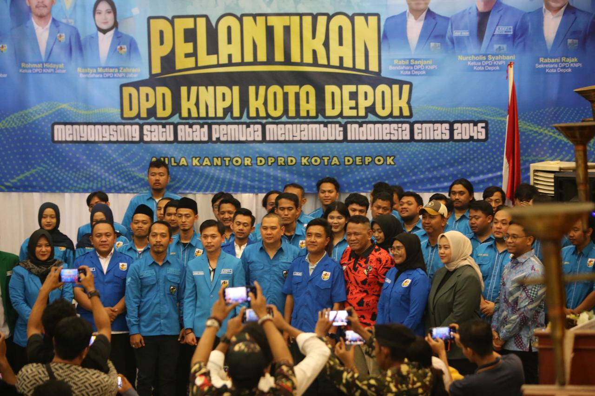

KNPI Kota Depok
Sejak 1973
Tentang Kami
Komite Nasional Pemuda Indonesia (KNPI) Kota Depok adalah wadah berhimpunnya berbagai organisasi kepemudaan (OKP) di Kota Depok yang berperan aktif dalam pengembangan potensi, kreativitas, dan partisipasi pemuda dalam pembangunan daerah.
- Wadah koordinasi organisasi kepemudaan di Kota Depok
- Mitra strategis pemerintah daerah dalam bidang kepemudaan
- Penggerak pemuda yang berdaya, mandiri, dan berintegritas
KNPI Kota Depok berkomitmen menjadi ruang kolaborasi pemuda yang inklusif, progresif, dan solutif dalam menjawab tantangan sosial, ekonomi, serta kebangsaan, demi terwujudnya pemuda Depok yang unggul dan berkontribusi nyata bagi masyarakat.
Korbid Perekonomian
Mendorong peran aktif pemuda dalam penguatan ekonomi kreatif, kewirausahaan, dan pemberdayaan UMKM di Kota Depok.
Korbid Kemaritiman & Investasi
Mengembangkan wawasan pemuda dalam sektor investasi, potensi daerah, serta mendukung iklim pembangunan yang berkelanjutan.
Korbid Politik, Hukum & Keamanan
Menumbuhkan kesadaran pemuda terhadap demokrasi, hukum, kebangsaan, dan stabilitas keamanan di Kota Depok.
Korbid Pemberdayaan Masyarakat & Kepemudaan
Menguatkan peran pemuda dalam kegiatan sosial, pengabdian masyarakat, dan peningkatan kualitas sumber daya manusia.
Korbid Pendidikan & Inovasi
Mendorong peningkatan kualitas pendidikan, literasi digital, serta inovasi pemuda berbasis teknologi dan kreativitas.
Korbid Komunikasi & Media
Mengelola informasi, publikasi, dan media KNPI Kota Depok untuk membangun citra positif serta komunikasi yang efektif.